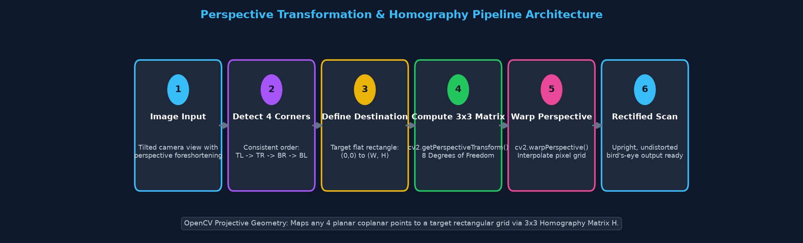
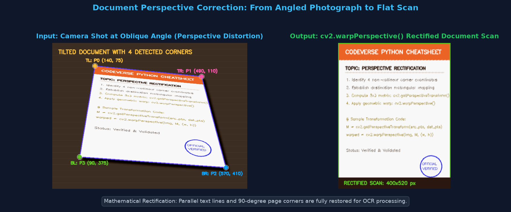
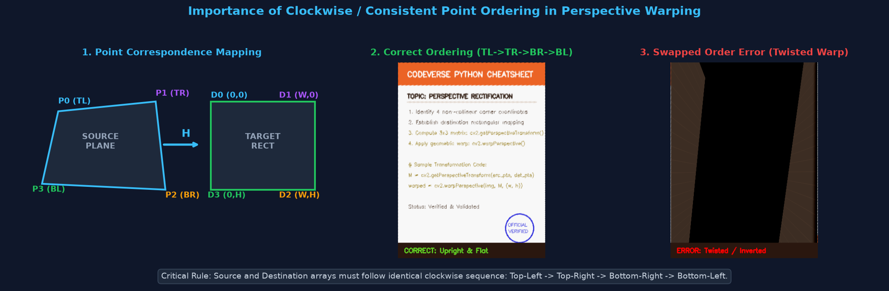
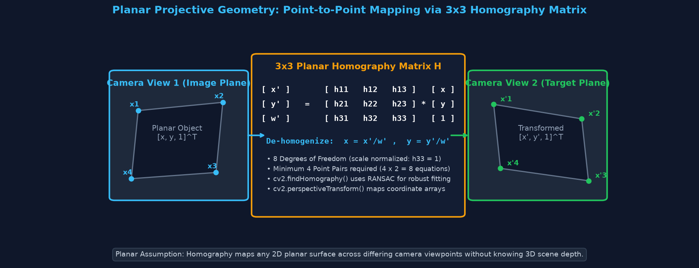
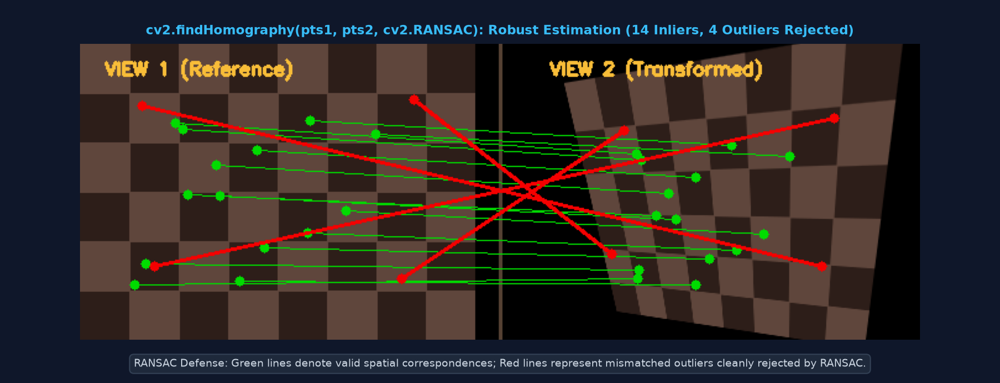
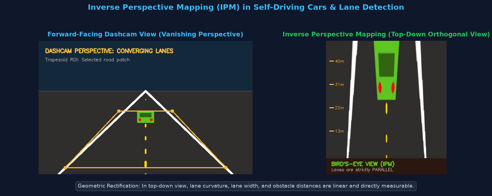

Real world 3D hota hai, lekin camera uski 2D picture capture karta hai. Jab aap kisi document, road, ya billboard ko angle par khade hokar photograph karte hain, to jo hissa camera ke paas hota hai wo bada dikhta hai aur jo door hota hai wo chhota ho jata hai. Is optical phenomenon ko Perspective Distortion kehte hain.

Affine Transform (Topic 4): Parallel lines parallel hi rehti hain (shear, rotate, scale). 3 point pairs require karta hai (2×3 matrix).
Perspective Transform: Parallel lines vanishing point par converge hoti hain. Straight lines straight rehti hain par parallelism lose ho jati hai. 4 point pairs require karta hai (3×3 matrix).
Perspective transformation image points ki geometric mapping badalta hai. Yeh koi magic nahi hai: agar image ka koi hissa blurred ya out-of-focus tha, to warp hone ke baad bhi wo blurry hi rahega!
Perspective transformation aur homography ko samajhne ke liye in terms ko jaan na zaroori hai:
| Term | Definition (Hinglish) | Practical Role |
|---|---|---|
| Perspective Distortion | Angle se photo lene par objects ka foreshortening (paas bada, door chhota) ho jana. | Isi distortion ko correct karne ke liye hum warping use karte hain. |
| Source Points (src) | Original distorted image par select kiye gaye 4 corner coordinates (x, y). |
Tilted document ya surface ke 4 kono ki exact location. |
| Destination Points (dst) | Output image par jahan un 4 kono ko map karna hai (u, v). |
Target flat rectangle ke 4 corners: (0,0) se (W,H). |
| Homography (H) | Ek hi planar surface ke 2 alag-alag camera views ke beech ka 3×3 projective mapping matrix. | 8 independent degrees of freedom hote hain (scale normalized). |
| Bird's-Eye View (IPM) | Forward camera view ko top-down orthogonal (aerial) view mein transform karna. | Self-driving cars mein lane lines parallel measure karne ke liye used. |
cv2.getPerspectiveTransform() |
Exactly 4 source aur 4 destination points se 3×3 transformation matrix calculate karta hai. | Clean corner coordinates available hone par directly matrix banata hai. |
cv2.warpPerspective() |
Calculated 3×3 matrix ko input image par apply karke warped image generate karta hai. | Pixel interpolation aur output dimension (width, height) handle karta hai. |
cv2.findHomography() |
Multiple matching point pairs (4 ya 400+) se robust matrix estimate karta hai using RANSAC. | Feature matching aur noisy correspondences ke liye gold standard. |
cv2.perspectiveTransform() |
Image pixels warp karne ke bajaye numerical coordinates array (N, 1, 2) ko matrix se map karta hai. |
Object detection bounding boxes ya trajectory points ko transform karne ke liye used. |
Kisi bhi image ko rectify karne ke liye yeh 6 standard steps follow kiye jaate hain:

Homogeneous coordinates mein projective transformation matrix H is equation se relate hota hai:
[ x' ] [ h11 h12 h13 ] [ x ]
[ y' ] = [ h21 h22 h23 ] * [ y ]
[ w' ] [ h31 h32 h33 ] [ 1 ]
Cartesian Coordinates:
x_final = x' / w'
y_final = y' / w'
Teesra coordinate w' perspective depth scaling factor hota hai. Jab hum x' aur y' ko w' se divide karte hain, to final 2D pixel coordinates prapt hote hain.
Beginners ki sabse common mistake hoti hai point ordering mismatch! src_pts aur dst_pts ka order strictly identical hona chahiye:
(0, 0)(width - 1, 0)(width - 1, height - 1)(0, height - 1)
Jab koi planar surface (jaise paper sheet, football ground, ya wall poster) do alag camera viewpoints se dekhi jaati hai, to dono views ke pixels ek 3×3 Homography Matrix (H) ke through directly related hote hain bina 3D camera depth jaane!

| Function | Input | Robustness | Primary Use Case |
|---|---|---|---|
cv2.getPerspectiveTransform(src, dst) |
Exactly 4 points | No outlier tolerance | Document scanning jab 4 corner coordinates manually ya contour se precisely known hon. |
cv2.findHomography(src, dst, cv2.RANSAC) |
Many points (4 to 1000s) | RANSAC rejects noisy outliers | Feature matching (ORB/SIFT), image stitching (panoramas), augmented reality tracking. |
cv2.warpPerspective(img, M, (w, h)) |
Image + 3×3 matrix | Interpolates pixels | Full image frame ko warp karke nayi perspective image produce karna. |
cv2.perspectiveTransform(pts, M) |
Coordinate array + 3×3 matrix | Exact math | Sirf coordinate points (e.g. bounding box corners ya vehicle coordinates) transform karna. |
Ek tilted document photograph ke 4 corners detect karke flat upright scan banana:
import cv2
import numpy as np
# 1. Tilted document image load karein
image = cv2.imread("document_tilted.jpg")
if image is None:
# Testing ke liye dummy image create karein
image = np.full((480, 640, 3), 40, dtype=np.uint8)
# 2. Source image par document ke 4 corners (TL, TR, BR, BL)
# (Real application mein yeh contours ya Harris corners se milte hain)
src_pts = np.float32([
[140, 75], # Top-Left (TL)
[490, 110], # Top-Right (TR)
[570, 410], # Bottom-Right (BR)
[90, 375] # Bottom-Left (BL)
])
# 3. Desired flat output rectangle size define karein (A4 ratio: 400 x 520)
target_w, target_h = 400, 520
dst_pts = np.float32([
[0, 0],
[target_w - 1, 0],
[target_w - 1, target_h - 1],
[0, target_h - 1]
])
# 4. 3x3 Perspective Transformation Matrix compute karein
M = cv2.getPerspectiveTransform(src_pts, dst_pts)
# 5. Warp perspective apply karein
warped_doc = cv2.warpPerspective(image, M, (target_w, target_h), flags=cv2.INTER_LINEAR)
print("3x3 Perspective Matrix M:")
print(M)
cv2.imwrite("document_rectified.jpg", warped_doc)Jab feature matching se bahut saare point pairs milte hain jinme kuch galat (outliers) hote hain, to cv2.findHomography() RANSAC use karke clean matrix nikalta hai:

import cv2
import numpy as np
# Points format: float32 array of shape (N, 1, 2)
# Maan lijiye matching algorithms (ORB/SIFT) se points mile hain:
pts_src = np.array([[[50, 60]], [[280, 40]], [[270, 210]], [[70, 200]], [[150, 120]]], dtype=np.float32)
pts_dst = np.array([[[40, 70]], [[290, 30]], [[260, 220]], [[80, 190]], [[160, 115]]], dtype=np.float32)
# cv2.RANSAC outlier rejection ke saath matrix estimate karta hai
H_matrix, mask = cv2.findHomography(pts_src, pts_dst, cv2.RANSAC, 5.0)
print("Estimated Homography Matrix H:")
print(H_matrix)
print("Inlier Mask (1=Inlier, 0=Outlier):", mask.ravel())
# Kisi naye point coordinate ko project karein (e.g. object center)
query_point = np.array([[[100.0, 150.0]]], dtype=np.float32)
projected_point = cv2.perspectiveTransform(query_point, H_matrix)
print(f"Point {query_point[0,0]} maps to {projected_point[0,0]} in target view")Autonomous driving mein dashcam road view ko 2D top-down ground plane mein convert karna taaki lane curvature accurately measure ho sake:

import cv2
import numpy as np
# Road frame load karein
frame = cv2.imread("road_dashcam.jpg")
if frame is None:
frame = np.zeros((400, 640, 3), dtype=np.uint8)
# Road ke trapezoidal region ke corners
src_road = np.float32([
[240, 210], # Top-Left near horizon
[400, 210], # Top-Right near horizon
[560, 380], # Bottom-Right near car hood
[80, 380] # Bottom-Left near car hood
])
# Top-down view par parallel rectangle
bev_w, bev_h = 360, 400
dst_road = np.float32([
[60, 0],
[bev_w - 60, 0],
[bev_w - 60, bev_h - 1],
[60, bev_h - 1]
])
# Matrix compute karke warp karein
M_ipm = cv2.getPerspectiveTransform(src_road, dst_road)
birds_eye_view = cv2.warpPerspective(frame, M_ipm, (bev_w, bev_h),
flags=cv2.INTER_LINEAR,
borderMode=cv2.BORDER_CONSTANT)
cv2.imwrite("road_birds_eye.jpg", birds_eye_view)User kisi bhi angle se receipt ya book page ki photo leta hai; app automatically 4 corners detect karta hai aur flat rectangular PDF page generate kar deta hai.
Dashcam perspective mein lane lines triangle ki tarah converge hoti hain. Inverse Perspective Mapping (IPM) unhe parallel straight lines mein convert karta hai jisse lane curvature aur car offset accurately calculate hota hai.
Stadium camera ke tilted view se pitch ya penalty box ko 2D top-down grid par map karke ball trajectory, offside lines, aur LBW review simulate kiye jaate hain.
Cricket broadcast mein ground par sponsor logo digitally paint karna, ya live video mein stadium hoardings par custom advertisements project karna.
| Common Issue | Root Cause | Solution / Fix |
|---|---|---|
| Twisted / Hourglass Warped Output | Source aur destination points ka sequence match nahi karta (e.g. TR and BR swapped). | Dono arrays ko consistent clockwise sequence mein arrange karein: TL → TR → BR → BL. |
| TypeError: layout/dtype mismatch | Points array integer type ya galat shape mein pass kiya gaya. | Hamesha np.float32() use karein: pts = np.float32([...]). |
| Black or Cropped Output Image | cv2.warpPerspective() mein pass kiya gaya (width, height) tuple inverted hai (height, width). |
OpenCV dimensions format (w, h) hota hai, jabki numpy shape (h, w) hoti hai! Parameter (target_w, target_h) pass karein. |
| Singular Matrix / Assertion Failure | 3 ya 4 points ek hi seedhi line par hain (collinear) ya overlapping hain. | Check karein ki points non-collinear hon aur ek valid 4-sided polygon banate hon. |
| RANSAC Matrix Unstable / Inaccurate | Matching points mein noise zyada hai ya threshold parameter bohot strict hai. | cv2.findHomography(src, dst, cv2.RANSAC, ransacReprojThreshold=5.0) use karein aur minimum 15-20 matches verify karein. |
h33 = 1).cv2.getPerspectiveTransform() se solve hoti hain.cv2.findHomography() ke saath cv2.RANSAC use karein taaki false matches reject ho sakein.cv2.perspectiveTransform(pts, H) use hota hai.Answer: Affine transformation mein parallel lines ko parallel rehna mandatory hota hai, isliye isme sirf 6 degrees of freedom hote hain (2 translation, 1 rotation, 2 scale, 1 shear). Har point pair 2 equations (x aur y) deta hai, to 3 points × 2 = 6 equations kaafi hoti hain. Perspective transformation mein parallelism preserve nahi hoti aur 8 degrees of freedom hote hain, isliye 4 points × 2 = 8 equations mandatory hoti hain.
Answer: cv2.getPerspectiveTransform() strictly 4 source aur 4 destination points expect karta hai aur exact mathematical solution nikalta hai (outliers handle nahi karta). Jabki cv2.findHomography() 4 se lekar hazaaro matching points le sakta hai aur RANSAC algorithm use karke noisy, galat matches ko automatically filter karke best-fit planar matrix calculate karta hai.
Answer: Forward-facing dashcam perspective mein door jaati hui road lines converge hoti hain, jisse curve ka radius aur vehicle ka lane center se distance non-linear ban jata hai. IPM ke through road surface ko top-down 2D orthogonal grid par warp karne se lane boundaries strictly parallel ho jaati hain, jisse vehicle ke steering angle aur distance to lane edge ka direct metric conversion (meters) feasible ho jata hai.